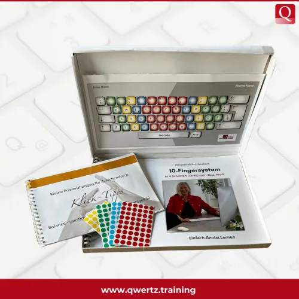

QWERTZ: Der Onlinekurs "10-Fingersystem" in 4 Lektionen
Produktprofil · Marktplatz-Daten 2026-10-14 · Verkaufsseiten-Recherche 2026-10-14 · Kategorien: Education
- QWERTZ: Der Onlinekurs "10-Fingersystem" in 4 Lektionen ist ein/e Webinar in Education, vertrieben über den Digistore24-Marktplatz von Anbieter QWERTZTraining, gelistet seit 2023-03-15.
- Listenpreis $183.34 (single payment) — Checkout, Auslieferung und Rückerstattungen laufen über Digistore24 selbst, nicht über den Anbieter.
- Käuferschutz: keine standardisierte Garantie-Formulierung gefunden — Rückerstattungsbedingungen vor der Zahlung auf der offiziellen Seite prüfen.
Interesse an QWERTZ: Der Onlinekurs "10-Fingersystem" in 4 Lektionen? Aktueller Preis, Boni und Garantiebedingungen finden Sie auf der offiziellen Seite des Anbieters:
Offizielle Verkaufsseite ansehen
Affiliate-Link (Werbung) — wir verdienen ggf. eine Provision, ohne Mehrkosten für Sie.

Marktplatz-Daten
| Produkttyp | Webinar |
|---|---|
| Preis | $183.34 (Single payment) |
| Garantie/Rückgabe | Laut Verkaufsseite des Anbieters — vor dem Kauf auf der offiziellen Seite prüfen |
| Anbieter | QWERTZTraining (gelistet seit 2023-03-15) |
Marktplatz-Beschreibung des Anbieters
Bereite dich auf einen Umsatzschub vor mit qwertz.training, der Plattform, die Weiterbildung neu definiert! Mit diesem modernen und innovativen Kurs, basierend auf den neuesten neurowissenschaftlichen Methoden, bist du in der Pole-Position, um lebenslanges Lernen zu fördern und dabei auch noch lukrative Gewinne zu erzielen. Was ist das Besondere? Das Zehnfingersystem ist der unverzichtbare Fähigkeitsschatz für jeden, der professionell mit E-Mails und Texten auf dem PC umgeht. Welchen Mehrwert bietet qwertz.training? * Beschleunige die Texteingabe und spare kostbare Zeit * Steigere die Konzentrationsfähigkeit und Effizienz * Reduziere Tippfehler für eine verbesserte Arbeitsqualität * Mache Arbeitsstunden produktiver * Erlebe Lernvergnügen mit ansprechenden Bildern, Farben, Audiogeschichten und gehirngerechten Übungen Wie funktioniert dieser revolutionäre Online-Kurs? * Er besteht aus 4 umfassenden Lektionen à 2 Stunden * Direkter Download der Kursmaterialien nach dem Kauf * Ein praktisches Handbuch wird dem Kunden unmittelbar nach dem Kauf per Post zugeschickt Jetzt ist deine Chance, dich als Affiliate zu registrieren und ein passives Einkommen aufzubauen. Hole dir beeindruckende 30 % Provision pro verkauftem Kurs für einen Preis von 195 €. Benötigst du Unterstützung oder hast du Fragen? Unser freundliches Team steht dir jederzeit unter der Rufnummer 07821 991063 zur Verfügung. Komm an Bord und hilf uns, die deutsche Bildungslandschaft in eine spannende, effektive und farbenfrohe Zukunft zu führen! Zehnfingersystem - 10-Fingersystem - Schnelltippen - PC-Schreiben - Tastschreiben - Tastaturschreiben - Keybord - Schreibtraining -
Von der Verkaufsseite des Anbieters
Seitentitel: Onlinekurs: 10-Fingersystem in 8h by QWERTZ.training - Digistore24
Abschnitts-Überschriften
- Onlinekurs: 10-Fingersystem in 8h by QWERTZ.training
- Handbuch QWERTZ.training
- Zubehör: Tastatur Karton by Qwertz.training
- Zubehör: Farbpunkte by QWERTZ.training
- Onlinekurs: 10-Fingersystem in 8h by QWERTZ.training
- Onlinekurs: 10-Fingersystem in 8h by QWERTZ.training
- Handbuch QWERTZ.training
- Zubehör: Tastatur Karton by Qwertz.training
Einstiegstext
Kurs-Beschreibung: Die Lektionen haben eine Videolaufzeit von rund 1h. Mit den dazugehörigen Übungen brauchst du pro Lektion ca. 2h.
In allen Lektionen verknüpfst Du deine Finger mit Farben, Bildern und Geschichten. So erlernt dein Gehirn – wie ein Gedächtnis-Künstler – spielerisch unser 10-Finger-System. Nach jeder Lektion manifestierst Du das Erlernte. Ganz einfach mit spielerischen Rätseln und Übungen.
Dieser 10-Finger-System Kurs ist als berufliche Weiterbildung oder berufsbezogene Ausbildung steuerlich absetzbar.
Bewahre deshalb die Rechnung immer für deine Steuererklärung auf, damit du die Kosten komplett von deiner Steuer absetzen kannst.
Preisangaben auf der Seite: $10
Recherche-Methode: rohes HTML · 896 Wörter · Qualität: rich · recherchiert am 2026-10-14. Vollständige Recherche-Datei (MD) ↗
Wie Produkte dieser Art geliefert werden
Allgemeiner Hinweis zu diesem Produkttyp (keine anbieterspezifische Anleitung): Webinare sindLive-Online-Sitzungen: nach der Anmeldung erhalten Sie den Link per E-Mail für den Termin. Für die genaue Anwendung von QWERTZ: Der Onlinekurs "10-Fingersystem" in 4 Lektionen sind die offizielle Verkaufsseite und die enthaltenen Materialien maßgeblich.
Gut zu wissen
- Keine Garantie-Formulierung in unserer Recherche gefunden — bestätigen Sie das Rückgabefenster auf der offiziellen Seite, bevor Sie kaufen.
Was ist QWERTZ: Der Onlinekurs "10-Fingersystem" in 4 Lektionen?
QWERTZ: Der Onlinekurs "10-Fingersystem" in 4 Lektionen ist ein/e webinar in der Kategorie Bildung des Digistore24-Marktplatzes, veröffentlicht von Anbieter QWERTZTraining und im Verkauf seit 2023-03-15. Der Anbieter beschreibt es so: "Bereite dich auf einen Umsatzschub vor mit qwertz.training, der Plattform, die Weiterbildung neu definiert! Mit diesem modernen und innovativen Kurs, basierend auf den neuesten neurowissenschaftlichen Methoden, bist du in der Pole-Position, um lebenslanges Ler" (Marktplatz-Beschreibung des Anbieters, leicht gekürzt).
QWERTZ: Der Onlinekurs "10-Fingersystem" in 4 Lektionen Preis: was Sie zahlen
Der Marktplatz listet QWERTZ: Der Onlinekurs "10-Fingersystem" in 4 Lektionen zum $183.34 Preis (single payment). Digistore24 fügt im Checkout die gesetzliche Steuer Ihres Landes hinzu — dort sehen Sie den Endbetrag vor der Zahlung. Die Verkaufsseite selbst nennt: $10 (Anbieteraussagen — verbindlich ist der Checkout-Betrag). Eine separate Plattformgebühr gibt es nicht; Anbieter können eigene Upsells nach dem Checkout anbieten.
QWERTZ: Der Onlinekurs "10-Fingersystem" in 4 Lektionen Rückerstattung und Geld-zurück-Garantie
Wir haben keine standardisierte Garantie-Formulierung auf der Verkaufsseite gefunden. Rückerstattungen für Digistore24-Käufe laufen über die Plattform: Antrag über den Support-Link in Ihrer Bestell-E-Mail, innerhalb des Garantiezeitfensters, das im Checkout angezeigt wird. Praktischer Rat: Entscheiden Sie innerhalb des Fensters — wenn das Produkt unter den Erwartungen bleibt, erstatten lassen statt irren lassen.
Mechanik im Detail: So funktionieren Digistore24-Rückerstattungen.
Für wen ist QWERTZ: Der Onlinekurs "10-Fingersystem" in 4 Lektionen geeignet?
Basierend auf der Bildung-Einordnung und der single payment-Abrechnung richtet sich QWERTZ: Der Onlinekurs "10-Fingersystem" in 4 Lektionen an Käufer, die bildung-Lösungen suchen und ein Budget für einen Premium-Kauf eingeplant haben. Der ehrliche Test ist nicht die Kategorie, sondern Ihre eigene Situation: Werden Sie es realistisch innerhalb des Garantiefensters nutzen? Wenn ja, ist der Preis eine Investition; wenn nein, ist er Ballast — unabhängig von der Qualität.
Ist QWERTZ: Der Onlinekurs "10-Fingersystem" in 4 Lektionen seriös? Was Sie vor dem Kauf prüfen
Wir bewerten keine Seriosität — das kann niemand, ohne das Produkt zu nutzen. Prüfbare Punkte, alle auf dieser Seite: die Marktplatz-Historie des Anbieters (im Verkauf seit 2023-03-15), die wörtlichen Verkaufsseiten-Auszüge unten (gekennzeichnet als Anbieteraussagen — deren Werbung, nicht unsere Empfehlung), die Garantiebedingungen im Checkout und die Auslieferungsart. Vorsichtsignale bei jedem Angebot: Countdown-Dringlichkeit gepaart mit vagen Rückerstattungsbedingungen, Testimonials ohne Datum und Anbieterseiten, die den Preis bis zum Checkout verstecken.
Wie kommen Sie nach dem Kauf an QWERTZ: Der Onlinekurs "10-Fingersystem" in 4 Lektionen?
Der Checkout läuft über Digistore24. Nach der Zahlung: Webinare sindLive-Online-Sitzungen: nach der Anmeldung erhalten Sie den Link per E-Mail für den Termin. Bewahren Sie die Bestell-E-Mail auf — sie ist Ihr Schlüssel zum/d zur webinar, zu Rückerstattungsanträgen und zum Digistore24-Käufersupport.
QWERTZ: Der Onlinekurs "10-Fingersystem" in 4 Lektionen Erfahrungen: so recherchieren Sie richtig
Die meisten „Erfahrungsberichte" zu Marktplatz-Produkten sind Affiliate-Inhalte — einschließlich Seiten wie dieser, die an Käufen mitverdienen. Behandeln Sie jeden Bericht (auch unseren) als Ausgangspunkt und prüfen Sie gegen Primärquellen: die Verkaufsseite des Anbieters, die Digistore24-Rückerstattungsrichtlinie und — für bildung — unabhängige Communities außerhalb des Affiliate-Ökosystems. Auf dieser Seite sind die Verkaufsseiten-Auszüge unten wörtlich zitiert, damit Sie die Aussagen des Anbieters bewerten können, ohne wegzuklicken.
Wie Sie QWERTZ: Der Onlinekurs "10-Fingersystem" in 4 Lektionen sicher kaufen
- Öffnen Sie die offizielle Verkaufsseite und lesen Sie das vollständige Angebot.
- Bestätigen Sie Endpreis und Garantiezeitfenster auf der Digistore24-Kassenseite — sie ist bindend, kein Vergleichsportal.
- Zahlen Sie innerhalb des Digistore24-Checkouts (niemals per Überweisung oder Off-Platform-Links).
- Speichern Sie die Bestellbestätigung; notieren Sie die Rückerstattungsfrist im Kalender.
- Prüfen Sie zügig. Der Digistore24-Käufersupport hilft, wenn der Anbieter nicht reagiert.
Vollständiges Recherche-Archiv für dieses Produkt (Markdown: kompletter Marktplatz-Datensatz + wörtliche Verkaufsseiten-Auszüge): QWERTZ: Der Onlinekurs "10-Fingersystem" in 4 Lektionen — vollständiges Datenarchiv (Markdown-Datei: 43854-qwertz-der-onlinekurs-10-fingersystem-in-4-lektionen.md).
- Listenpreis & Abrechnung — Quelle: offizielle Digistore24-Marktplatz-API, Stand 2026-10-14. Maßgeblich für den aktuellen Preis ist immer die Kassenseite.
- Verkaufsseiten-Zitate — Quelle: https://www.digistore24.com/product/489246, abgerufen 2026-10-14 (Methode: rohes HTML). Verify: offizielle Seite öffnen.
- Garantie / Rückgabe — vom Anbieter festgelegt; vor dem Kauf auf der Verkaufsseite bestätigen.
- Nicht von uns geprüft: Produktqualität, Ergebnisse, Testimonials — kein Praxistest für dieses Listing durchgeführt.
Häufige Fragen zu QWERTZ: Der Onlinekurs "10-Fingersystem" in 4 Lektionen
Antworten aus dem Marktplatz-Snapshot (2026-10-14) und der Verkaufsseiten-Recherche (2026-10-14); Anbieteraussagen sind inline gekennzeichnet.
Was ist QWERTZ: Der Onlinekurs "10-Fingersystem" in 4 Lektionen?
QWERTZ: Der Onlinekurs "10-Fingersystem" in 4 Lektionen ist ein Angebot des Typs „Webinar" im Digistore24-Marktplatz, Anbieter: QWERTZTraining, gelistet seit 2023-03-15. Eingepflegt unter Bildung. Digistore24 wickelt Checkout, Lieferung und Rückgaben ab.
Wie viel kostet QWERTZ: Der Onlinekurs "10-Fingersystem" in 4 Lektionen?
Der Digistore24-Marktplatz listet es für $183.34 (single payment). Preise legt der Anbieter fest und können sich ändern — der Marktplatz-Eintrag oben zeigt den Schnappschuss; die offizielle Verkaufsseite zeigt den aktuellen Preis.
Gibt es eine Geld-zurück-Garantie für QWERTZ: Der Onlinekurs "10-Fingersystem" in 4 Lektionen?
Unsere Verkaufsseiten-Recherche hat keine explizite Garantie-Formulierung gefunden. Viele Digistore24-Produkte bieten 60 Tage Geld-zurück, aber das legt jeder Anbieter selbst fest — bestätigen Sie es auf der offiziellen Verkaufsseite, bevor Sie kaufen.
Ist QWERTZ: Der Onlinekurs "10-Fingersystem" in 4 Lektionen seriös?
Wir bewerten keine Seriosität — wir veröffentlichen überprüfbare Zahlen: Anbieter QWERTZTraining (gelistet seit 2023-03-15), mit der vollständigen Verkaufsseiten-Recherche archiviert auf dieser Seite (Anbieteraussagen als solche gekennzeichnet). Lesen Sie unsere 6-Punkte-Bewertungsmethode und entscheiden Sie anhand der Zahlen — oder diskutieren Sie QWERTZ: Der Onlinekurs "10-Fingersystem" in 4 Lektionen auf GitHub.
Wo kann ich QWERTZ: Der Onlinekurs "10-Fingersystem" in 4 Lektionen sicher kaufen?
Nur über die offizielle Verkaufsseite, die auf dieser Seite verlinkt ist (Checkout und Rückgaben laufen über Digistore24). Prüfen Sie dort Preis und Garantie vor der Bestellung. Der Link ist ein Affiliate-Link — der Kauf unterstützt diese Website ohne Mehrkosten für Sie.
Wie erhalte ich QWERTZ: Der Onlinekurs "10-Fingersystem" in 4 Lektionen nach der Zahlung?
Der Checkout läuft über Digistore24: Nach der Zahlung erhalten Sie Ihren Zugang oder Download per E-Mail und in Ihrem Digistore24-Kundenkonto. Lieferdetails für diesen Produkttyp: Webinare sindLive-Online-Sitzungen: nach der Anmeldung erhalten Sie den Link per E-Mail für den Termin. Bei Problemen kann der Digistore24-Käufersupport Ihre Bestellung wiederherstellen.
Alle 50 Käuferfragen zu Bildung — das komplette Kategorie-FAQ.
QWERTZ: Der Onlinekurs "10-Fingersystem" in 4 Lektionen auf Reddit diskutieren
In Community-Threads vergleichen echte Käufer Erfahrungen. Wir verlinken Communities, keine einzelnen Posts — Threads verschwinden, Subreddits bleiben:
- Reddit-Suche nach „QWERTZ: Der Onlinekurs "10-Fingersystem" in 4 Lektionen" — Live-Ergebnisse, von uns nicht beeinflusst.
- Top-„Erfahrungs"-Treffer dieses Jahr — selbst nach Aktualität filtern.
Passendes auf Amazon.de
Physische Produkte und Zubehör, die häufig zusammen mit QWERTZ: Der Onlinekurs "10-Fingersystem" in 4 Lektionen gekauft werden:
- Education auf Amazon.de — Top-Ergebnisse, Amazon-Ranking.
- Bestseller: Education — live Liste von Amazon, von uns nicht kuratiert.
Werbung: Als Amazon-Partner verdient DigistorePicks DE an qualifizierten Käufen (Partner-tag adminstorede-21). Amazon setzt eigene Preise und Provisionen (niedrige einstellige Prozente — weit unter den 30–75% der Digistore24-Anbieter). Amazon ist ein Convenience-Angebot für Sachprodukte, kein Ersatz für das digitale Produkt oben.
Ähnliche Angebote in Bildung

ZUGRIFF FÜR ALLE! Jede Person, die ein Arbeitsverhältnis mit Ihnen als Schulgemeinde hat sowie eine E-Mail-Adresse von Ihrer Schule, hat die Zufriffsberechtigun

MATRIXPRINZIP – High-Ticket-Produkt mit bis zu 820,56€ Provision pro Verkauf! Mindset, emotionale Intelligenz und finanzielle Intelligenz – genau die Fähigkeite

Eine bislang noch einzigartige Ausbildung auf dem Markt für eine interessante Zielgruppe! Das Pferdegestützte Coaching auf Basis systemischer Grundlagen erlerne

Für die Teilnehmer ist die Gesamt- oder Teil-Ausbildungen möglich. Empfehle das einzigartige Produkt & verdiene passives Einkommen durch unser effektives Ay
Ähnliche Preislage in Bildung
Viele Studios glauben, sie brauchen mehr Leads – in Wahrheit liegt das Problem im Verkaufsgespräch. Unser Kurs liefert fertige Skripte plus Psychologie & Ko

P.A.R.A. Kontrolle – Affiliate-Programm Wir suchen professionelle Affiliates mit Erfahrung im Paid Traffic, die langfristig mit einem klar positionierten digita
Was dieses Trainingsprogramm ist: Für ALLE Menschen, die die Schnauze voll von der Zigarette haben und für immer Nichtraucher werden dürfen Eine Software für ei
Ähnliche Suchanfragen
Wo Sie es sich ansehen können
Wo Sie es sich ansehen können
Aktuelle Preise, Garantie und Boni finden Sie auf der offiziellen Verkaufsseite:
Offizielle Verkaufsseite ansehen
Das ist ein Affiliate-Link (Werbung) — kaufen Sie darüber, verdienen wir ggf. eine Provision, ohne Mehrkosten für Sie.
Quellen & weiterführende Informationen
- Offizielle Verkaufsseite (aktueller Preis, Garantie, Boni): www.digistore24.com/product/489246 (Affiliate-Link)
- Öffentliche Digistore24-Produktseite: checkout-ds24.com/product/489246
- Vollständige Recherche-Datei (Markdown, versioniert): content/products/43854-qwertz-der-onlinekurs-10-fingersystem-in-4-lektionen.md
- Affiliate-Supportseite des Anbieters: www.qwertz.training/affiliate-partner/
- Marktplatz-Kategorie: Bildung
Wie wir Produkte wie QWERTZ: Der Onlinekurs "10-Fingersystem" in 4 Lektionen bewerten
Sechs Prüfungen, ausschließlich mit offiziellen Marktplatz-Zahlen. Die vollständige Bewertungsmethode lesen · unsere Recherche-Standards & Kennzeichnung.
Fragen oder eigene Erfahrungen mit QWERTZ: Der Onlinekurs "10-Fingersystem" in 4 Lektionen?
Praxis-Tests veröffentlichen wir erst, nachdem wir ein Produkt selbst gekauft haben — aber Ihre Erfahrung hilft anderen Lesern: Diskussion zu QWERTZ: Der Onlinekurs "10-Fingersystem" in 4 Lektionen auf GitHub starten/verfolgen. Falsche Zahl gefunden? Korrektur melden — jede Seite zeigt ihre Datenstände, Korrekturen gelten für die ganze Website.